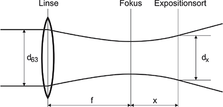
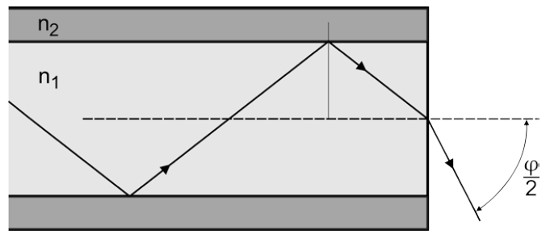
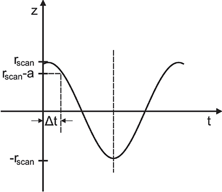
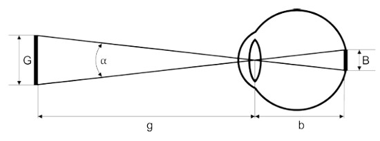
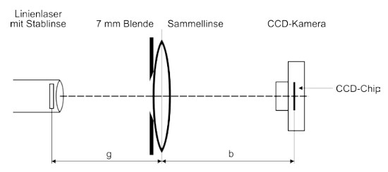
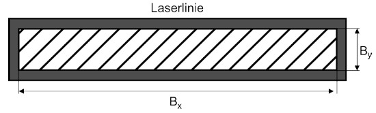

Aus den Herstellerangaben über die wichtigsten Daten des Lasers und der Strahlführung ist es meist möglich, die Bestrahlungsstärke E und die Bestrahlung H zu berechnen. Für die Aufgabe benötigt man Angaben über die Laserleistung bei kontinuierlichen Lasern und die Impulsenergie, Impulsbreite und Impulswiederholfrequenz bei gepulsten Lasern. Weiterhin benötigt man Angaben über den Strahldurchmesser (in dem 63 % der Laserleistung enthalten ist) und den Strahlverlauf (Konvergenz oder Divergenz). Daraus lässt sich bei verschiedenen Anwendungen der kleinste relevante Strahldurchmesser ermitteln.
Bei kollimierter Laserstrahlung lässt sich der kleinste relevante Strahldurchmesser aus der Strahldivergenz und dem minimalen Abstand der Beschäftigten zur Laserstrahlungsquelle bestimmen (siehe Anhang 2 Abschnitt A2.1). Die Exposition kann in diesem und in den folgenden Fällen aus der angegebenen Laserleistung oder Impulsenergie und der Fläche, die dem kleinsten relevanten Durchmesser zugeordnet ist, berechnet werden.
Beispiel:
Ein Nd:YAG-Laser (Wellenlänge λ = 1 064 nm, Leistung P = 100 mW) strahlt mit einem Durchmesser von d63 = 2 mm. Zu berechnen ist die Bestrahlungsstärke E für eine Exposition der Augen und diese ist mit dem Expositionsgrenzwert EEGW zu vergleichen. Für den Fehlerfall wird von einer maximalen Expositionsdauer von t = 10 s ausgegangen. Die Strahldivergenz soll in diesem Beispiel vernachlässigt werden. Die Winkelausdehnung α ist kleiner als 1,5 mrad ("Punktlichtquelle").
Zunächst ist anhand von Tabelle 1 zu prüfen, welcher Blendendurchmesser D für die Berechnung der Fläche A zwecks Vergleichs mit dem Expositionsgrenzwert zu nehmen ist. Es muss danach für das Auge ein Blendendurchmesser von D = 7 mm verwendet werden.
Bestrahlte Fläche:
| A = | π ⋅ D2 | = | π ⋅ (7⋅10-3m)2 | = 3,85⋅10-5m2 | Gl. 5.1 |
| 4 | 4 |
Bestrahlungsstärke:
| E = | P | = | 0,1 W | = 2597 W⋅m-2 | Gl. 5.2 |
| A | 3,85 ⋅ 10-5 m2 |
Die Berechnung des Expositionsgrenzwertes EEGW erfolgt gemäß Anhang 4, Tabelle A4.4:
| EEGW = 10 ⋅ CA⋅CC W ⋅ m-2 | Gl. 5.3 |
Aus Anhang 4, Tabelle A4.6 entnimmt man die Parameter CA = 5 und CC = 1. Damit ergibt sich EEGW = 50 W ⋅ m-2. Die berechnete Bestrahlungsstärke E = 2 597 W ⋅ m-2 liegt weit über dem Expositionsgrenzwert. Vom Arbeitgeber müssen geeignete Schutzmaßnahmen ausgewählt und getroffen werden.
Hinweis 1:
Bei Verwendung der Tabelle A4.8 "Vereinfachte maximal zulässige Bestrahlungswerte auf der Hornhaut des Auges" aus Anhang 4 (kann bei der Auswahl einer Laser-Schutzbrille verwendet werden) würde sich in diesem Beispiel der Wert EEGW = 10 W ⋅ m-2 ergeben.
Hinweis 2:
Zur Bestimmung der erforderlichen Schutzstufe der Laser-Schutzbrille muss in diesem Fall die Bestrahlungsstärke auf Basis des tatsächlichen Laserstrahldurchmessers von 2 mm berechnet werden.
(1) Der kleinste relevante Strahldurchmesser ist abhängig vom Strahldurchmesser an der Linse sowie von der Brennweite der Linse und wird im kleinstmöglichen Abstand des Beobachters zur Laserstrahlungsquelle bestimmt (siehe Abbildung 3). Bei sichtbarer Laserstrahlung und im IR-A-Spektralbereich (400 nm bis 1 400 nm) – im Sinne einer "worst-case"-Abschätzung – kann von einem kleinsten Expositionsabstand von 100 mm hinter dem Fokus ausgegangen werden. Dies ist der Tatsache geschuldet, dass das schärfste (kleinste) Bild auf der Netzhaut in der Regel bei diesem Abstand entsteht.
(2) Man kann den Strahldurchmesser dx am Expositionsort wie folgt berechnen:
| dx = | d63 ⋅ x | Gl. 5.4 |
| f |
Dabei ist d63 der Strahldurchmesser an der Linse, x die Entfernung des Orts der Exposition vom Fokus und f die Brennweite der Linse.

Abb. 3 Laserstrahlung mit einer Linse gebündelt
Beispiel:
Ein Diodenlaser (Wellenlänge λ = 950 nm, Leistung P = 1,1 W) sendet einen nahezu parallelen Laserstrahl mit einem Durchmesser d63 von 3 mm aus und wird durch eine Linse mit der Brennweite f = 10 mm fokussiert. Zur Ermittlung der maximalen Gefährdung für eine Exposition der Augen und der Haut über t = 100 s wird die Bestrahlungsstärke E mit den Expositionsgrenzwerten EEGW verglichen.
Berechnung für die Augengefährdung:
Da der Laserstrahl auf die Netzhaut fokussiert werden kann, wird der Strahldurchmesser dx in diesem Beispiel im ungünstigsten Abstand von x = 100 mm Entfernung vom Fokus der Linse bestimmt:
| dx = | d63 ⋅ x | = | 3 mm ⋅ 100mm | = 30 mm | Gl. 5.5 |
| f | 10mm |
Der Durchmesser des Strahls ist größer als die Messblende von 7 mm nach Abschnitt 3.4.3 Tabelle 1, und ist somit für die Berechnung der Strahlquerschnittsfläche A anzuwenden.
Berechnung der Strahlquerschnittsfläche A:
| A = | π ⋅ d2x | = | π ⋅ (30⋅10-3 m)2 | = 7,1 ⋅ 10-4 m2 | Gl. 5.6 |
| 4 | 4 |
| E = | P | = | 1,1 W | = 1549 W⋅m-2 | Gl. 5.7 |
| A | 7,1⋅10-4m2 |
Expositionsgrenzwert EEGW:
EEGW = 10⋅CA⋅CC W⋅m-2
Aus Anhang 4, Tabelle A4.6 entnimmt man die Parameter CA = 100,002⋅(λ-700) = 3,16 und CC = 1. Damit erhält man EEGW = 31,6 W ⋅ m-2. Die berechnete Bestrahlungsstärke E = 1 549 W ⋅ m-2 liegt weit über dem Expositionsgrenzwert. Entsprechende technische und organisatorische Schutzmaßnahmen müssen vom Arbeitgeber getroffen werden.
Berechnung für die Hautgefährdung:
Da der Laserstrahl auf die Haut (dies gilt auch für die Hornhaut des Auges) fokussiert werden kann, muss der Durchmesser im Fokus der Linse bestimmt werden. Der Durchmesser des Strahls im Fokus ist daher kleiner als die Messblende mit einem Durchmesser von 3,5 mm. Nach Abschnitt 3.4.3 ist somit für die Berechnung der Fläche A die Messblende entsprechend der Tabelle 1 anzuwenden (D = 3,5 mm).
Berechnung der Strahlquerschnittsfläche A:
| A = | π ⋅ D2 | = | π ⋅(3,5⋅10-3m)2 | = 9,6⋅10-6 m2 | Gl. 5.8 |
| 4 | 4 |
| E = | P | = | 1,1 W | = 114583 W⋅m-2 | Gl. 5.9 |
| A | 9,6⋅10-6m2 |
Expositionsgrenzwert EEGW für die Haut aus Anhang 4, Tabelle A4.5:
| EEGW = 2 ⋅ 103 ⋅ CA W ⋅ m-2 | Gl. 5.10 |
Mit CA = 3,16, ergibt sich EEGW = 6 320 W ⋅ m-2. Die berechnete Bestrahlungsstärke E ≈ 115 000 W ⋅ m-2 liegt deutlich über dem Expositionsgrenzwert. Entsprechende technische und organisatorische Schutzmaßnahmen müssen vom Arbeitgeber getroffen werden.
(1) Laserstrahlung tritt aus Lichtwellenleitern divergent in Abhängigkeit von der numerischen Apertur (NA = sin(φ/2), φ = voller Öffnungswinkel) aus (siehe Abbildung 4). Als kleinstmöglicher Abstand von dem Laseraustritt kann im Wellenlängenbereich von 400 nm bis 1400 nm ein Abstand von 100 mm angenommen werden.

1 = Brechungsindex des Kerns, n2 = Brechungsindex des Mantels)" />Abb. 4 Laserstrahlung aus einem Lichtwellenleiter (n1 = Brechungsindex des Kerns, n2 = Brechungsindex des Mantels)
(2) In der folgenden Tabelle 4 wird der Zusammenhang zwischen der Numerischen Apertur NA und dem Strahldurchmesser bei dem ungünstigsten Abstand von 100 mm angegeben. Wenn die austretende Laserleistung (z. B. aus dem Datenblatt) bekannt ist, kann auf diese Weise die Bestrahlungsstärke im ungünstigsten Abstand von 100 mm vom LWL-Austritt berechnet werden.
Tab. 4 Strahldurchmesser in 100 mm Entfernung in Abhängigkeit von der Numerischen Apertur NA
| NA | φ in Grad | Strahldurchmesser in mm |
| 0,0 | 0,0 | 0 |
| 0,1 | 11,5 | 20,1 |
| 0,2 | 23,1 | 40,8 |
| 0,3 | 34,9 | 62,9 |
| 0,4 | 47,2 | 87,3 |
| 0,5 | 60,0 | 115,5 |
| 0,6 | 73,7 | 150,0 |
| 0,7 | 88,9 | 196,0 |
| 0,8 | 106,3 | 266,7 |
| 0,9 | 128,3 | 412,9 |
Hinweis:
Weitere nützliche Informationen zu Laserstrahlung, die in Lichtwellenleiter-Kommunikations-Systemen (LWLKS) genutzt wird, werden ausführlich in [12] behandelt.
(1) Beim direkten Blick in einen gebündelten Laserstrahl (mit einem kleineren Durchmesser als dem der Pupille) wird u. U. die gesamte in das Auge fallende Strahlungsleistung durch die Augenlinse auf einen kleinen Punkt auf der Netzhaut fokussiert. Bei Blick in ausgedehnte Quellen entsteht auf der Netzhaut ein größeres Abbild, über welches die einfallende Strahlungsleistung verteilt wird. Der für den obigen Fall ("Punktlichtquellen") gültige Expositionsgrenzwert kann dann um den Faktor CE (siehe Anhang 4, Tabelle A4.6) vergrößert werden. Eine ausgedehnte Quelle kann beispielsweise vorliegen, wenn ein aufgeweiteter Laserstrahl auf eine diffus reflektierende Wand (z. B. matt-weiß gestrichene Wand, keine spiegelnd reflektierende Flächen vorhanden) gerichtet ist und in diese Reflexionsstelle geblickt wird.
(2) Dabei ist zu berücksichtigen, dass diffuse Reflexion häufig auch gerichtet reflektierte Anteile besitzt. Dieses Beispiel ist nicht anwendbar bei optischen Strahlungsleistungen, die das Material (in diesem Beispiel die Wand) verändern würden.
Beispiel:
Ein Laserstrahl (Wellenlänge λ = 670 nm, Strahldivergenz φ = 10 mrad) mit der Leistung P = 1,1W wird an einer Fläche mit einem Fleckdurchmesser von d63 = 1,5 cm ideal diffus reflektiert. Zu berechnen ist der Expositionsgrenzwert EEGW für thermische Netzhautschädigung für eine maximale Expositionsdauer von t = 100 s (zufälliger unbeabsichtigter Blick, siehe Abschnitt 4.1) und eine minimale Wandentfernung von r = 1,2 m und es ist festzustellen, ob eine sichere Betrachtung in diesem Abstand möglich ist.
Lösung:
Der Expositionsgrenzwert für thermische Netzhautschädigung wird nach Tabelle A4.4 (Bereich 400 nm - 700 nm) berechnet. Er hängt von den Parametern α, CE und T2 ab. Nach Anhang 2, Abschnitt A2.3 gilt für die Winkelausdehnung α der scheinbaren Quelle:
| α = | d63 | = | 0,015 m | = 0,0125 rad = 12,5 mrad | Gl. 5.11 |
| r | 1,2 m |
Dies gilt nur bei senkrechtem Einfall und Blick auf die diffus reflektierende Fläche ("worst-case"-Szenario). Bei schrägem Blick wird der Fleck in Form einer Ellipse gesehen und α ist entsprechend anzupassen.
Damit wird CE nach Anhang 4, Tabelle A4.6:
| CE = | α | = | 12,5 mrad | = 8,33 | Gl. 5.12 |
| αmin | 1,5 mrad |
T2 berechnet sich wie folgt (Tabelle A4.6):
| T2 = 10⋅10α-1,5⁄98,5 s = 12,93 s | Gl. 5.13 |
Mit diesen Werten (α > 1,5 mrad und t > T2) berechnet sich der Expositionsgrenzwert nach Tabelle A4.4 wie folgt:
| EEGW = 18⋅CE⋅T2-0,25 W⋅m-2 = 79,07 W⋅m-2 | Gl. 5.14 |
Beim idealen Lambert‘schen Strahler (in den Halbraum) errechnet sich die Bestrahlungsstärke in Augenebene im Abstand von r = 1,2 m aus,
| E = ρ • | P⋅cos ε | Gl. 5.15 | |
| π⋅r2 |
wobei ρ Reflexionsgrad und ε Betrachtungswinkel in Bezug auf die reflektierende Fläche sind. Unter "worst-case"-Bedingungen, d. h. für ρ = 1 (keine Verluste) und ε = 0 (senkrecht zur diffus reflektierenden Oberfläche, cos ε = 1), gilt:
| E = | P | = | 1,1 W | = 0,24 W⋅m-2 |
| π⋅r2 | 4,5 m2 | Gl. 5.16 |
Die Bestrahlungsstärke E = 0,24 W⋅m-2 im Abstand von 1,2 m liegt damit deutlich unter dem Expositionsgrenzwert EEGW = 79,07 W ⋅ m-2 für 100 s und die Reflexionsstelle kann somit sicher für diese Zeit betrachtet werden. Danach bräuchten keine Schutzmaßnahmen ergriffen werden.
Bei der Annahme, es würde nur 10 % der Strahlung nahezu spiegelnd reflektiert und dieser Strahlungsanteil in einem Abstand von 1,2 m aufgrund der Divergenz auf eine Strahlquerschnittsfläche von A = 1,13 · 10-4 m2 aufgeweitet, dann würde sich dort eine Bestrahlungsstärke von
| E = | 0,1⋅1,1 W | = 937 W⋅m-2 | Gl. 5.17 |
| 1,13•10-4m2 |
ergeben. Dieser so berechnete Wert liegt um den Faktor 12,3 oberhalb des Expositionsgrenzwertes. Schutzmaßnahmen wären dann erforderlich.
Beispiel:
Ein aufgeweiteter Nd:YAG-Laserstrahl (cw) strahlt mit λ1 = 1064 nm, P1 = 1,5 mW und λ2 = 532 nm, P2 = 0,4 mW, Strahlquerschnitt jeweils 38,5 mm2. Wie hoch sind die Expositionsgrenzwerte für beide Wellenlängen bei einer Bestrahlungsdauer von t1 = 2 s und t2 = 10 s? Die Winkelausdehnung α ist kleiner als 1,5 mrad ("Punktlichtquelle"). Wird der Expositionsgrenzwert für thermische Netzhautschädigung eingehalten?
Lösung:
Die Expositionsgrenzwerte werden nach Tabellen A4.3 und A4.4 berechnet. Sie hängen von den Parametern CE, CC und t ab.
a) t1 = 2 s (Tabelle A4.3)
Für die Wellenlänge λ1 = 1 064 nm gilt der Expositionsgrenzwert
| HEWG,λ1 =90⋅CC⋅CE⋅t0,75 J⋅m-2 = 151,4 J⋅m-2 | Gl. 5.18 |
mit CC = 1 und CE = 1. Damit folgt für den Expositionsgrenzwert, ausgedrückt als Bestrahlungsstärke:
| EEWG,λ1 = | HEWG,λ1 | = | 151,4 J⋅m-2 | = 75,7 W⋅m-2 | Gl. 5.19 |
| t1 | 2s |
Die Bestrahlungsstärke des Lasers für die Wellenlänge λ1 beträgt:
| E1 = | P1 | = | 1,5⋅10-3 W | = 39,0 W⋅m-2 |
| A | 38,5⋅10-6 m2 | Gl. 5.20 |
Für die Wellenlänge λ2 = 532 nm gilt der Expositionsgrenzwert
| HEWG,λ2 = 18⋅CE⋅t0,75 J⋅m-2 = 30,3 J⋅m-2 | Gl. 5.21 |
bzw.
| EEWG,λ2 = | HEWG,λ2 | = | 30,3 J⋅m-2 | = 15,2 W⋅m-2 | Gl. 5.22 |
| t1 | 2s |
Der Laser hat bezüglich dieser Wellenlänge eine Bestrahlungsstärke von
| E2 = | P2 | = | 4⋅10-4 W | = 10,4 W⋅m-2. | Gl. 5.23 |
| A | 38,5⋅10-6 m2 |
b) t2 = 10 s (Tabelle A4.4)
Für die Wellenlänge λ1 = 1 064 nm gilt der Expositionsgrenzwert
| EEWG,λ = 10⋅CA⋅CC W⋅m-2 = 50 W⋅m-2 | Gl. 5.24 |
mit CA = 5 und CC = 1. Für die Wellenlänge λ2 = 532 nm gilt der Expositionsgrenzwert:
| EEWG,λ = 10W⋅m-2 | Gl. 5.25 |
Überprüfung, ob der Expositionsgrenzwert eingehalten ist:
Nach Abschnitt 4.2 muss überprüft werden, ob die Forderung
| Σ λ1 |
Ei | ≤1 |
| EEGW,λi |
gilt. Im Fall der Expositionsdauer t1 = 2 s ergibt sich:
| E1 | + | E2 | = | 39,0 W⋅m-2 | + | 10,4 W⋅m-2 | = 1,20 > 1 | Gl. 5.26 |
| EEGW,λ1 | EEGW,λ2 | 75,7 W⋅m-2 | 15,2 W⋅m-2 |
und im Fall der Expositionsdauer t2 = 10 s erhält man
| E1 | + | E2 | = | 39,0 | + | 10,4 | = 0,78 + 1,04 = 1,82 > 1 | Gl. 5.27 |
| EEGW,λ1 | EEGW,λ2 | 50,0 | 10,0 |
Der Expositionsgrenzwert wird bei beiden Expositionsdauern überschritten.
Beispiel:
Laserstrahlung von Scannern bzw. örtlich bewegter Laserstrahlung wird mit einer feststehenden Messblende bewertet. Es ergibt sich dann eine Impulsstrahlung.
| Wellenlänge: | λ = 650 nm |
| Laserleistung: | P = 0,1 W |
| Scanfrequenz: | f = 100 Hz |
| Scanbereich Durchmesser: | dscan = 200 mm |
| Strahldurchmesser: | d = 1 mm |
| Durchmesser der Messblende zur Leistungsmessung (siehe Tabelle 1): | D = 7 mm |
| Expositionsdurchmesser: | a = D + d = 8 mm |
Ein durch einen harmonisch angesteuerten Laserscanner bewegter Laserstrahl überstreicht das Auge. Die für den Betrachter gefährlichste Situation entsteht dann, wenn der Laserstrahl einen Richtungswechsel an den Orten +rscan und –rscan vornimmt (Abbildung 5), da der Laserstrahl in dieser Situation am längsten im Auge verharrt. Gesucht wird die Expositionsdauer Δt, in der ein Betrachter dem Laserstrahl beim Richtungswechsel ausgesetzt wird.

Abb. 5 Scanbereich und zeitlicher Verlauf beim Scannen
Für die Kosinusfunktion im Weg-Zeit Diagramm gilt:
| z=rscan⋅cos ωt | Gl. 5.28 |
Mit z = rscan - a und der Kreisfrequenz ω = 2π·f, folgt daraus:
| rscan–a = rscan ⋅ cos(2π⋅f⋅Δt) | Gl. 5.29 |
| 2π⋅f⋅Δt = arc cos | rscan–a | Gl. 5.30 |
| rscan |
Expositionsdauer Δt der Netzhaut:
| Δt = |
|
= |
|
≈ 0,0006s | Gl. 5.31 | ||||||||
| 2π⋅f |
2⋅π⋅100s-1 |
Expositionsgrenzwert im sichtbaren Spektralbereich für Zeiten 1,8 · 10-5 s bis 10 s beträgt (mit CE = 1):
| HEGW=18⋅t0,75 J⋅m-2 | Gl. 5.32 |
Da der Strahl an den Umkehrpunkten zweimal das Auge überstreicht, ist die Bestrahlungsdauer t = 2 · Δt. Es folgt HEGW = 0,12 J ⋅ m-2 und
| EEGW=HEGW⁄t=100 W⋅m-2. | Gl. 5.33 |
Die Bestrahlungsstärke (Leistungsdichte) E des Laserstrahls beträgt:
| E = | P | = | P | = | 0,1 W | = 2597 W⋅m-2 | Gl. 5.34 |
| A | π⁄4 ⋅D2 | 38,5 ⋅10-6 m2 |
In diesem Bespiel überschreitet die Leistungsdichte des Lasers den Expositionsgrenzwert um das 28-fache. Entsprechende Schutzmaßnahmen müssen festgelegt werden.
(1) Ein Laser strahlt kontinuierlich mit einer Wellenlänge von λ = 650 nm. Die Laserlinie wird durch eine Zylinderlinse (Stablinse) erzeugt. Es wird davon ausgegangen, dass CE > 1 ist. Der Laser entspricht der Laserklasse 3B gemäß DIN EN 60825-1:2008 [4].
(2) Für eine Gefährdungsbeurteilung sollen zwei Situationen überprüft werden, bei denen die Beschäftigten der Laserstrahlung ausgesetzt sein könnten.
(3) Vorgehensweise:
Für die Abstände von 80 mm und 400 mm muss CE ermittelt werden. Die Bestimmung von CE erfolgt über die Ermittlung der Winkelausdehnung α, unter der die scheinbare Quelle am Auge erscheint (siehe A2.3). Zur Bestimmung der scheinbaren Quellengröße wird das Auge durch eine Sammellinse und eine CCD-Kamera simuliert (siehe Abbildungen 6a und 6b). Im Prüfaufbau ist für g die Entfernung von 80 mm bzw. 400 mm zwischen der Vorderkante des Linienlasers bis zur Mitte der Sammellinse einzustellen. Die CCD-Kamera ist so zu verschieben, dass die scheinbare Quelle "scharf" abgebildet wird. Anhand des Kamerabildes werden die Größen Bx und By sowie die Bildweite b bestimmt. Wie im Laserschutz üblich, wird die verwendete Fläche auf die Größe reduziert, die 63 % der Strahlungsleistung (bzw. Strahlungsenergie) enthält. Daraus können Bx und By ermittelt werden (siehe Abbildung 7).
Mittels des Abbildungsmaßstabs g/b kann die scheinbare Quellengröße Gx in x- und Gy in y-Richtung bestimmt werden:
| Gx=Bx⋅g⁄b | Gl. 5.35 |
| Gy=By⋅g⁄b | Gl. 5.36 |
Aus den nun ermittelten Werten von Gx und Gy können αx und αy ermittelt werden:
| αx=Gx⁄g | Gl. 5.37 |
| αy=Gy⁄g | Gl. 5.38 |

a)
Für kleine Winkel gilt: α = G⁄g
Abbildungsmaßstab = g⁄b = G⁄B

b)
Abb. 6 Zur Bestimmung der Winkelausdehnung α der scheinbaren Quelle:
a) Winkelausdehnung α am Auge
b) Prüfaufbau

Abb. 7 Die schraffierte Fläche enthält 63 % der Energie der Laserstrahlung
Randbedingungen:
αmin = 1,5 mrad
αmax = 100 mrad
Aus den beiden Winkelausdehnungen αx und αy ist entsprechend dieser TROS Laserstrahlung ein Mittelwert αm wie folgt zu bilden:
| αm = | αx + αy | Gl. 5.39 |
| 2 |
Daraus wird CE berechnet mit:
| CE=αm⁄αmin | Gl. 5.40 |
Hinweis:
Der Wert für CE liegt bei Laserstrahlung von Linienlasern im Abstand von etwa 80 mm vom Strahlaustritt üblicherweise im Bereich von 2 bis 5. Macht der Hersteller keine Angaben, so muss bei der Gefährdungsbeurteilung im Abstand bis 100 mm mit dem Faktor CE = 1 gerechnet werden.
Nebenrechnung für g = 80 mm:
Mittels Messungen wurde Bx mit 0,01 mm und By mit 0,52 mm bestimmt. Der Abbildungsmaßstab g/b beträgt 1,41. Es ergibt sich Gx = 0,014 mm und Gy = 0,733 mm. Mit dem angenommenen Messabstand g von 80 mm folgt:
| αx=0,014 mm⁄80 mm=0,18 mrad | Gl. 5.41 |
Da der minimale Wert für αx 1,5 mrad beträgt, wird mit diesem Wert für αx weiter gerechnet.
| αy=0,733 mm⁄80 mm=9,16 mrad | Gl. 5.42 |
| αm=1,5 mrad + 9,16 mrad⁄2 = 5,33 mrad | Gl. 5.43 |
| CE = | αm | = | 5,33 mrad | = 3,55 | Gl. 5.44 |
| αmin | 1,5 mrad |
In diesem Beispiel wurde im Abstand von 80 mm mit der 7-mm-Blende eine Leistung P von 5 mW gemessen. Dieser Wert ist mit dem Grenzwert für die Laserklasse 2 für 0,25 s zu vergleichen. Er beträgt PEGW = 1 mW · CE = 3,55 mW. Es ergibt sich, dass dieser Wert schon für eine Expositionsdauer von 0,25 s im Abstand von 80 mm überschritten wird.
Nebenrechnung für g = 400 mm:
Mit dem angenommenen Messabstand (Beobachtungsabstand von der Wand) von 400 mm und Gx = 100 mm und Gy = 5 mm folgt:
| αx=100 mm⁄400 mm=250 mrad | Gl. 5.45 |
| αy=5 mm⁄400 mm=12,5 mrad | Gl. 5.46 |
Da αx maximal 100 mrad groß werden kann, wird αx auf 100 mrad festgelegt.
| αm = | 100 mrad + 12,5 mrad | = 56,25 mrad | Gl. 5.47 |
| 2 |
| CE = | 56,25 mrad | = 37,5 | Gl. 5.48 |
| 1,5 mrad |
Bei der Leistungsüberprüfung im Abstand von g = 400 mm ergibt sich eine Leistung P von 0,35 mW mit der 7-mm-Blende. Für die Bestimmung des Expositionsgrenzwertes muss der Expositionsgrenzwert für 400 nm ≤ λ ≤ 700 nm aus Tabelle A4.4 herangezogen werden:
| EEGW = 18⋅CE⋅T2-0,25 W⋅m-2 | Gl. 5.49 |
Der Expositionsgrenzwert muss für die Zeit T2 bestimmt werden. Dabei wird davon ausgegangen, dass eine Blickfixierung der Laserstrahlverteilung auch in längeren Zeitabschnitten (hier 3 h) nicht für längere Zeiten als T2 erfolgt, sondern durch Augen- und Kopfbewegungen verhindert wird. T2 entnimmt man aus Tabelle A4.6 für den Fall 1,5 mrad < α ≤ 100 mrad und erhält
| T2 = 10⋅10(α–1,5)⁄98,5 s = 36,0 s. | Gl. 5.50 |
Damit ergibt sich der Expositionsgrenzwert von EEGW = 275,6 W⋅m-2, oder, wenn man mit der Fläche A der Messblende von 38,5·10-6 m2 multipliziert, P = 10,6 mW. Dieser Expositionsgrenzwert wird also eingehalten. Vorübergehende Blendung ist jedoch möglich und muss speziell betrachtet werden.